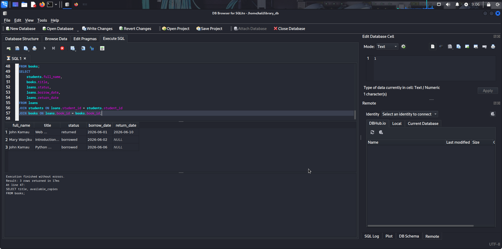
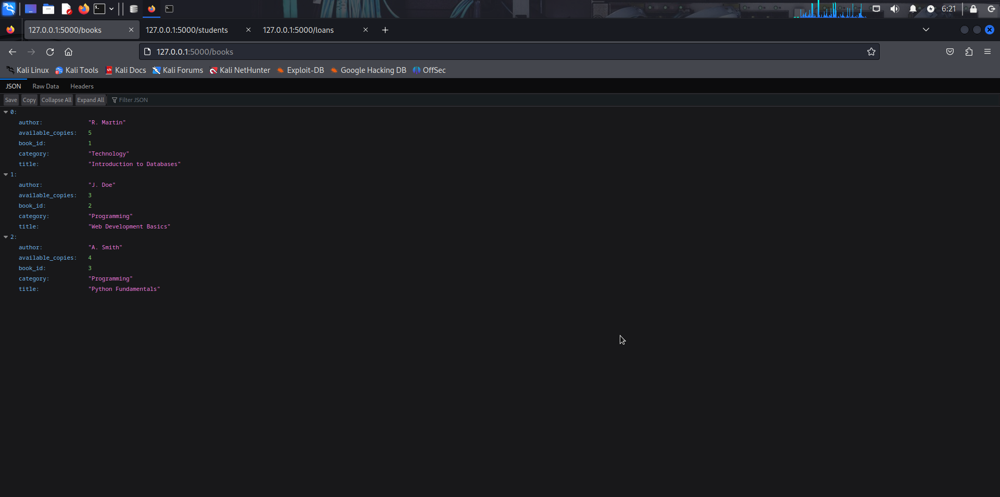
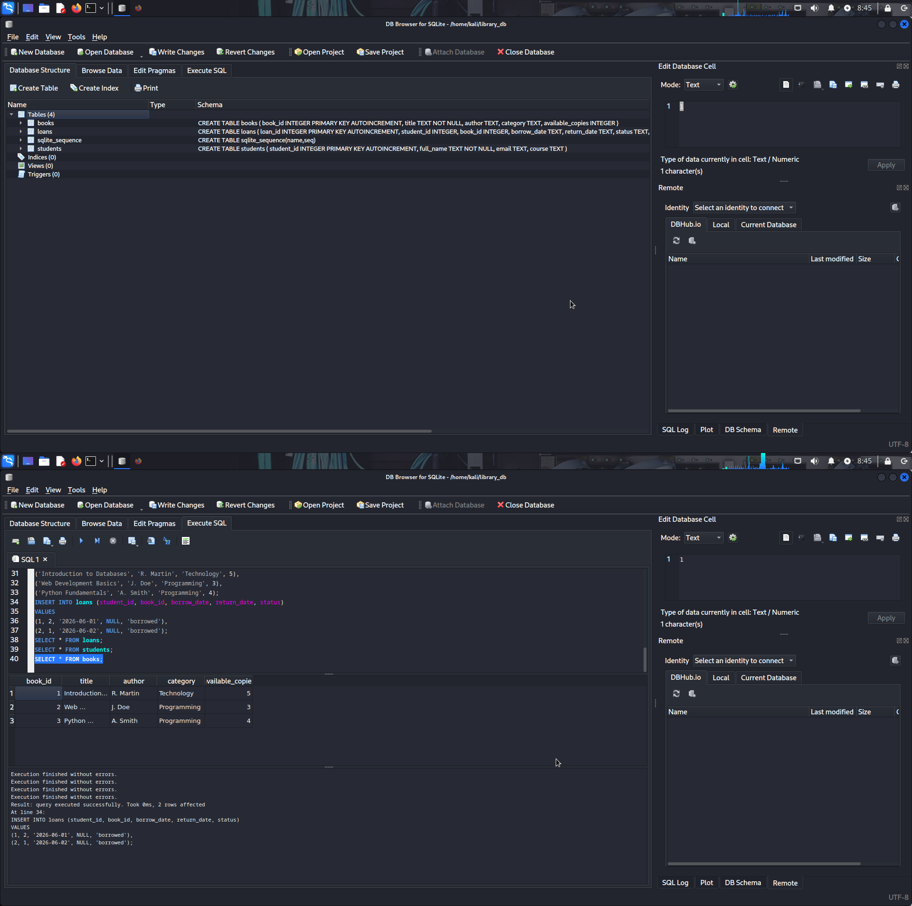

Project Overview
Designing and implementing robust backend systems and secure APIs for data management and integration. The centrepiece is a Library Management System: a SQLite relational database paired with a RESTful API to create, read, update, and manage library records and resources reliably.
The work covers the backend fundamentals: modelling data, building endpoints, validating input, and structuring code so the system is dependable and ready to serve a front end.
Key Responsibilities
- Designed the relational database schema for library records.
- Implemented the database using SQLite.
- Built RESTful API endpoints for managing library resources.
- Added data validation and consistent error handling.
- Structured backend code for clarity and maintainability.
- Documented the API for front-end integration.
Systems & Components Built
- SQLite Relational Database Schema
- RESTful API for Library Resources
- CRUD Endpoints (Create, Read, Update, Delete)
- Data Validation Layer
- Backend Infrastructure for the Library System
- API Documentation
Tools & Technologies Used
Build & Implementation Activities
- Modelling entities and relationships into a relational schema
- Creating and populating SQLite tables
- Writing and testing API routes for each resource
- Validating incoming data and handling errors gracefully
- Verifying CRUD operations end-to-end
- Documenting endpoints for integration
Impact & Outcomes
- A functional backend powering a Library Management System.
- A clean, predictable RESTful API for library resources.
- Reliable, structured data management through SQLite.
- A solid foundation ready for front-end integration.
Project Evidence



Skills Demonstrated
- Relational Database Design
- SQLite Implementation
- RESTful API Development
- Backend Engineering
- Data Validation & Error Handling
- API Documentation
Project Outcome
This project strengthened practical experience in backend engineering, from data modelling and database implementation to designing and documenting a RESTful API. It also enhanced the ability to build dependable, well-structured backend systems that manage data cleanly and integrate smoothly with a front end.